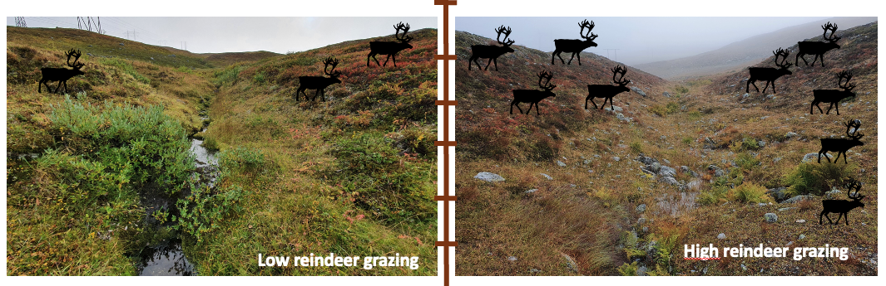

Current projects
Here I have some information of ongoing projects.
River methane emissions
Collaborators: Emily Stanley (University of Wisconsin-Madison), Ryan Sponseller (Umeå University), Luke Loken (USGS), Nora Casson (University of Winnipeg), Samantha Oliver (USGS), Peter Raymond (Yale University), Shaoda Liu (Peking Normal University), Giuseppe Amatulli (Yale University)
In this project, led by E. Stanley, we have been compiling a large database of river methane concentrations and fluxes, currently in review in ESSD and available as a preprint.
We are also been exploring how this database can be used to answer questions on methane processes in river ecosystems. In this sense, I have been leading an effort to quantify global riverine methane emissions, its main drivers and spatial and temporal patterns. This work is currently in review.
Timeline: 2020 – 2023
Links
Top-down controls from Arctic terrestrial herbivores on aquatic biogeochemistry
Collaborators: Ryan Sponseller, Johan Olofsson, Matthias Siewert (Umeå University), Karin Nilsson (Swedish University of Agricultural Sciences)
Here we have been exploring how major Arctic terrestrial hervivores (reindeers, rodents, moths) have the capacity to propagate biogeochemical effects from land to recipient aquatic systems. We are focused on two aspects: one is how the fine-scale landscape use of herbivores overlaps with hydrological connectivity in the Arctic. For example, rodents such as lemmings and voles have a winter activity pattern characterized by making nests in snowbeds, which provide large insulation. The second aspect is to combine monitoring data, large-scale herbivore exclosures, and remote sensing tools to detect biogeochemical signals in aquatic systems that can be related to herbivory in terrestrial ecosystems. For example, rodent and moth outbreaks have a profound impact in terrestrial ecosystems by supressing primary productivity and generating litter, and we are able to detect this signal in the recipient streams and lakes.
Timeline 2020 – 2023

A reaction-transport model for Carbon processing in stream networks across land productivity gradients
Collaborators: Susana Bernal (CEAB-CSIC, Spain), Hjalmar Laudon (SLU, Sweden)
In this project I will (attempt to) develop a whole-stream network transport-reaction model for carbon, that captures the inputs, transport and processing of carbon within the stream networks. This will involve some theoretical work as well as some empirical measurements to validate the model, ideally capturing productivity gradients within Europe.
This project is funded by a mobility grant from the Swedish Research Council, where I have the opportunity to do a research stay in the Blanes Centre of Advanced Research.
Timeline 2022 – 2025